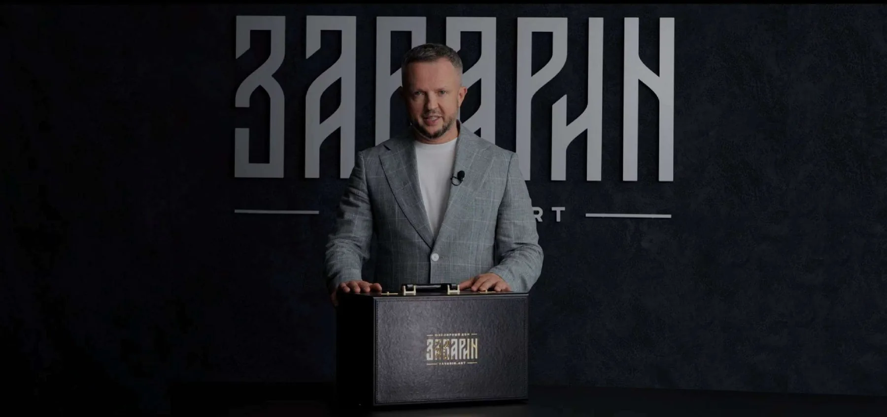

О бренде
Ювелирный дом ЗАВАРИН
Бренд православных ювелирных изделий братьев Ярослава и Антона Завариных, история которого началась в 2013 году.

Манифест
Соблюдая и оберегая православные традиции, мы создаём авторские коллекции уникальных работ из драгоценных металлов, натуральных камней и ценных пород дерева.
История бренда
От увлечения — к семейному дому
История бренда
Бренд ЗАВАРИН начинает свою историю в 2013 году в городе Костроме как увлечение Ярослава Заварина. Изделия сразу находят отклик в сердцах людей, появляются первые заказчики и единомышленники.
Семейное дело
Атмосфера родного города и творческая увлечённость Ярослава воодушевляют его брата Антона. В 2018 году братья организуют семейное предприятие, ювелирный дом «Ортодоксарт».
Ребрендинг
Тёплый отклик покупателей стал стимулом для создания семейного бренда, названного по фамилии основателей — Ярослава и Антона Завариных.
Галерея в Москве
6 марта 2026 года открылась первая ювелирная галерея ЗАВАРИН — в Большом Ордынском переулке, в историческом центре Замоскворечья.
Авторский стиль
Авторский почерк читается в каждой работе. Он — в смелом, но гармоничном сочетании природных и драгоценных материалов, в каждой детали, которую можно рассматривать как отдельное произведение искусства, но только взглянув на композицию целиком, понять глубину, смысл и красоту задуманного.
Мы честно и с душой подходим к своей работе и гарантируем действительно высокое качество изделий, представляющих художественную ценность.
Около 70% изделий ювелирного дома создаются с использованием цельного агата; для этого в ЗАВАРИН работает собственный цех огранки.